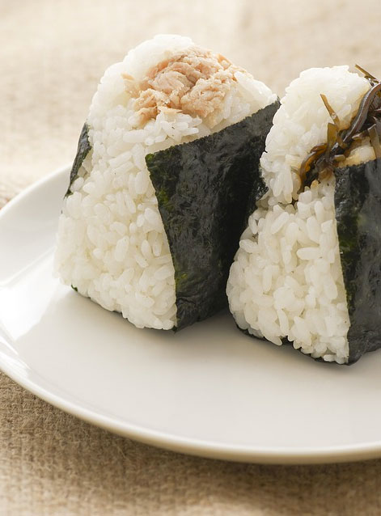

Onigiri

Description
Onigiri are Japanese rice balls. They come in a variety of fillings,
including chicken, tuna, and salmon. More traditional fillings include
bonito flakes and soy sauce, roe, and chopped Japanese pickles
(tsukemono). You can also experiment with different shapes - round,
square, trianglular, and so on.
Ingredients
- 4 cups white rice (uncooked, short-grain)
- 5 cups water
- filling (of your choice)
- toasted seaweed wrappers (nori)
- furikake (optional)
Steps
-
Place the rice in a sieve and rinse under cold water (about two minutes)
-
Cook rice, preferably using a rice cooker. If boiling rice over the
stove, bring pot of water and rice to a boil and let simmer until the
rice has absorbed the water (about 12 minutes)
- Let rice cool enough to be handled(about 5 minutes)
-
Using your hands, shape the rice into a ball that will fit in the palm
of your hand
- Make a well in the rice and spoon in some filling
- Shape the ball to cover the filled well with rice
-
Before eating, wrap the onigiri with seaweed (as in the above picture)